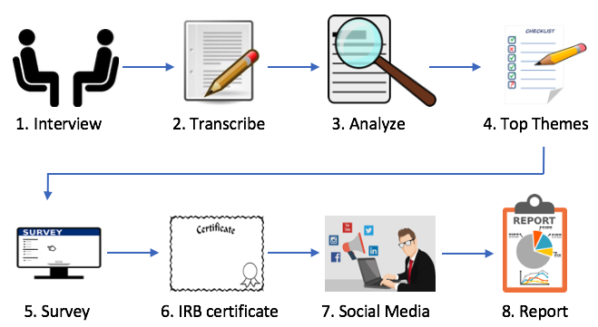

How Well Does Undergraduate Education Prepare Software Engineers? Perspectives of Practitioners in Bangladesh
Abstract
While the sole purpose of undergraduate education is not to prepare the students for the industry, it is certainly one of its important objectives. In this work, we investigate how well the Bangladeshi software and IT-related undergraduate education prepares the students for the software industry. We conducted semi-structured interviews of twenty practitioners from the Bangladeshi software industry. During the interviews, these practitioners provided commentary on where they believe the undergraduate education system falls short, and provided their suggestions for improvement. Based on the themes discovered from the interviews, we created a survey where more than two hundred practitioners participated. The results of our work suggest that most of the practitioners believe that, while some aspects of the undergraduate education are fine, the undergraduate education system leaves its graduates largely unprepared for the software industry. In this paper, we summarize and present the practitioners’ opinions on some key areas including but not limited to updating of syllabi, internships as part of the curricula, the nature, length and evaluation process of undergraduate projects, pedagogical issues, and academic practices.
Methodology

Results
Results...
Link to Data
Links...
Authors
Computer Science Department
Pennsylvania State University - Abington
Abington, PA, USA
Computer Science and Engineering Department,
University of Dhaka
Dhaka, Bangladesh
Institute of Information Technology
University of Dhaka
Dhaka, Bangladesh
Institute of Information Technology
University of Dhaka
Dhaka, Bangladesh
Department of Computer Science
University of Toronto
Toronto, ON, Canada